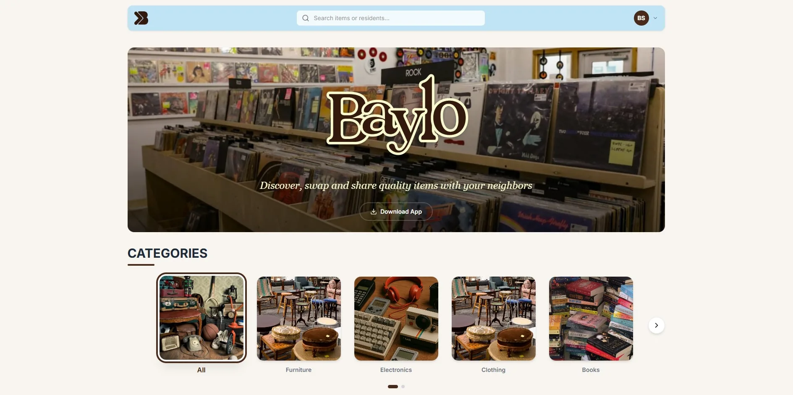
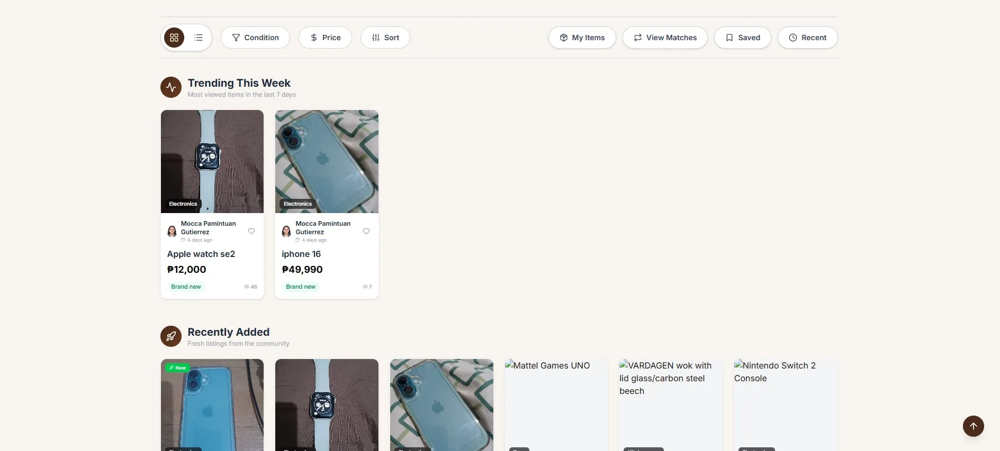

Capstone project, 4-person team
Baylo
A community bartering app for Barangay Balibago, Santa Rosa, Laguna, built by our team of four. I was the only web developer and built the whole web platform on my own; my three teammates built the mobile app. Residents post items, chat and trade with their neighbours, and Gemini estimates each item's value and finds good trade matches.
4.89/5from 100 respondents in the ISO/IEC 25010 evaluation I led
The design


The mission
Baylo is our capstone at FEU Alabang. It lets residents of Barangay Balibago discover, swap and share items with their neighbours.
We were a team of four: Ma. Samantha Elizabeth M. Depamaylo, Coleen N. Aclaro, Jinya Marray P. Gutierrez and me. My teammates built the mobile app. I built the web platform and its backend on my own, and led the research and evaluation.
What I did
- Web platform: built Baylo's web platform alone: a FastAPI backend with 9 route modules over a 13-table PostgreSQL database, and a React, TypeScript and Tailwind frontend where users post and trade items.
- AI features: added Gemini to estimate an item's value and category from its photos, screen listings for prohibited items, and score how well two items match for a trade (value, category, condition, interest).
- Real-time features: wired up Firebase for sign-in, real-time chat and notifications.
- Admin tools: built an admin dashboard for users, listings, reports and trades.
- Deployment: deployed the backend to Google Cloud Run in a Docker container.
- Research and evaluation: led the survey and evaluation under ISO/IEC 25010; 100 respondents rated the platform 4.89/5.
In numbers
- 4.89/5ISO/IEC 25010 rating from 100 respondents, in the evaluation I led
- 9API route modules in the FastAPI backend
- 13tables in the PostgreSQL database
- 2apps on one backend: my web platform and the team's mobile app
How it's built
- Frontend
- React, TypeScript, Tailwind
- Backend
- FastAPI, 9 route modules
- Database
- PostgreSQL, 13 tables
- AI
- Google Gemini API for item value, category, screening and trade matching
- Sign-in, chat and notifications
- Firebase
- Hosting
- Web app on Firebase Hosting; backend in a Docker container on Google Cloud Run
- Mobile app
- built by my teammates
Key decisions
Firebase for real-time, PostgreSQL for the listings
Baylo is a web and a mobile app, so everything that has to reach both apps instantly goes through Firebase: sign-in, chat and notifications. The system's own data, such as listings, trade offers, ratings and reports, lives in PostgreSQL, where the backend can query and join it.
One backend for web and mobile
Both apps call the same API, so the rules for posting, trading and reporting are written once, and a fix on the server reaches web and mobile users at the same time. The mobile team built against FastAPI's automatic /docs page, which always matches the code.
Gemini only behind the server
The apps never call Gemini directly; the backend does, so the API key never ships inside the web or mobile app. If a call fails, the backend tries again, and users can optionally report a bad AI result, which admins see next to the AI's usage numbers.
The AI suggests, people decide
Gemini suggests a category, a value estimate and fair trade matches, but it never acts on its own: residents decide what to post and which offers to accept, and barangay officials keep an eye on activity and reports from the web admin dashboard.
Docker on Cloud Run
Upgrading our Firebase plan came with Google Cloud credits, and I already used Google Cloud, so the backend runs as a container on Cloud Run in the same account.
The API
Both apps send the signed-in user's Firebase ID token with every request (an Authorization: Bearer header), so the backend knows who is calling. The routes below are the ones the web app uses.
/api/items- Listings: browse them, open one (each view is counted), and the full list for admins.
/api/trade-offers- Trade offers sent, received and completed.
/api/users- Profiles, profile pictures, reviews and each user's trading stats.
/api/ratings- Ratings after a trade, and rating stats.
/api/saved-items- Items a user saved for later.
/api/recently-viewed- Items a user looked at recently.
/api/recommended- Items recommended for this user.
/api/reports- Reports about listings or users; barangay officials resolve or dismiss them in the admin dashboard.
/api/ai- Admin view of the AI: usage stats and recent user feedback.